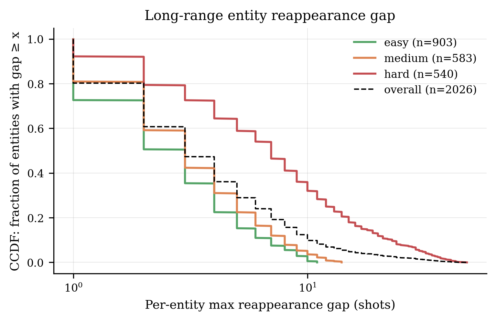
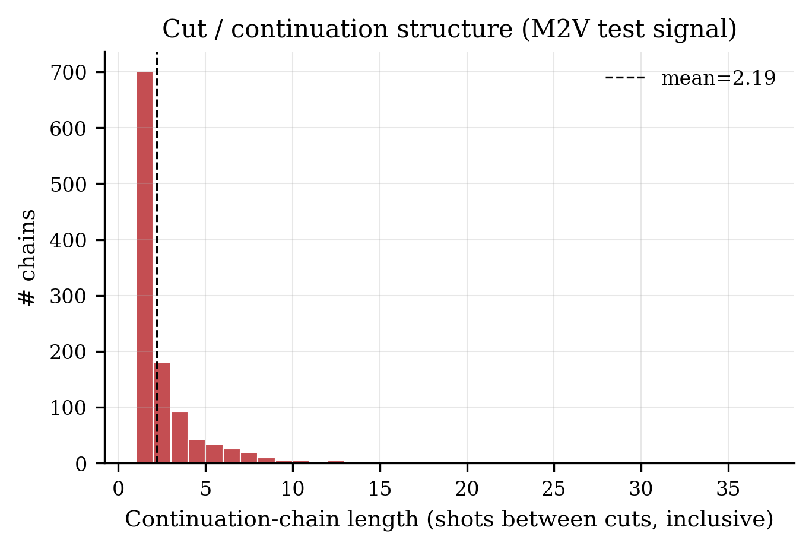
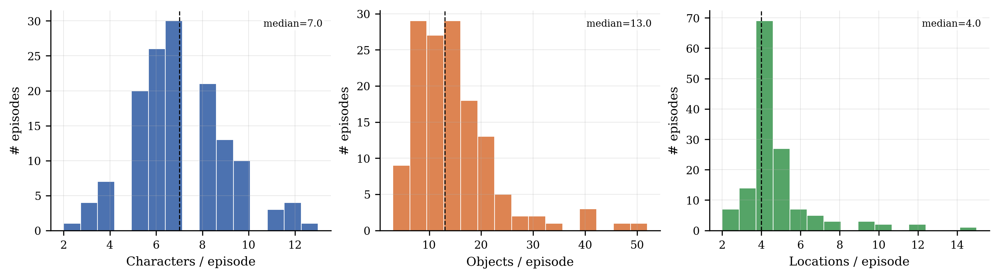
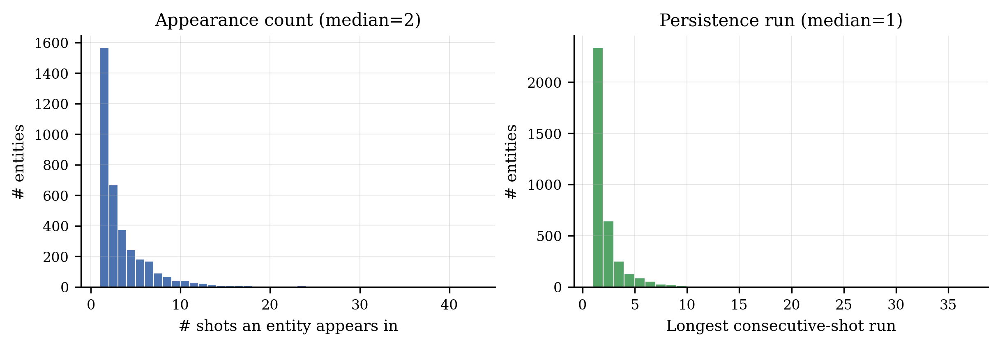
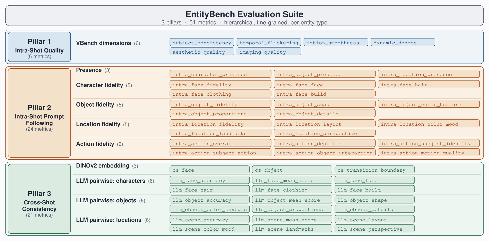

1ByteDance · 2ByteDance Seed · 3Rice University
Multi-shot video generation extends single-shot generation to coherent visual narratives, yet maintaining consistent characters, objects, and locations across shots remains a challenge over long sequences. Existing evaluations typically use independently generated prompt sets with limited entity coverage and simple consistency metrics, making standardized comparison difficult. We introduce EntityBench, a benchmark of 140 episodes (2,491 shots) derived from real narrative media, with explicit per-shot entity schedules tracking characters, objects, and locations simultaneously across easy / medium / hard tiers of up to 50 shots, 13 cross-shot characters, 8 cross-shot locations, 22 cross-shot objects, and recurrence gaps spanning up to 48 shots. It is paired with a three-pillar evaluation suite that disentangles intra-shot quality, prompt-following alignment, and cross-shot consistency, with a fidelity gate that admits only accurate entity appearances into cross-shot scoring. As a baseline, we propose EntityMem, a memory-augmented generation system that stores verified per-entity visual references in a persistent memory bank before generation begins. Experiments show that cross-shot entity consistency degrades sharply with recurrence distance in existing methods, and that explicit per-entity memory yields the highest character fidelity (Cohen's d = +2.33) and presence among methods evaluated.
The Benchmark
EntityBench scripts are derived from real narrative media, then enriched and validated by LLMs into generation-ready prompts. Each shot ships with an explicit entity_schedule naming the characters, objects, and locations expected to appear, along with cut and continuation transition flags. The three difficulty tiers separate long-range memory load from intra-shot complexity: hard-tier episodes hold per-shot composition roughly constant while pushing recurrence gaps past 30 shots and entity-slot re-appearance rates above 80%.




Evaluation
The evaluation suite asks three progressive questions: is each shot well-formed in isolation?, does each shot match its prompt?, and do shots agree with one another? Pillars build on each other — Pillar 2's per-shot fidelity scores filter the cross-shot pool used in Pillar 3, so cross-shot consistency is only measured on appearances the model rendered correctly.

VBench-style dimensions: subject consistency, temporal flickering, motion smoothness, dynamic degree, aesthetic and imaging quality. Is each shot well-formed in isolation?
Presence, per-entity fidelity (face / hair / clothing / build / shape / layout / …) and action correctness, scored shot-by-shot.
DINOv2 centroid similarity for characters and objects, plus LLM pairwise identity judgment on type-specific criteria.
The fidelity gate. A naive cross-shot metric rewards methods that produce nearly-static yet incorrect renderings — they look similar to each other so they're scored as “consistent.” The fidelity gate admits only (shot, entity) pairs that cleared the Pillar 2 fidelity threshold into the Pillar 3 pool, so consistency is measured only on appearances the entity was rendered correctly in the first place.
EntityMem
EntityMem stores per-entity visual and textual references in a persistent memory bank before any video generation begins, so each entity's identity is established once and reused consistently throughout the sequence. At generation time, each shot retrieves its entity references independently of the scene in which they previously appeared — disentangling identity from context, and avoiding the autoregressive failure mode where distortions in early shots compound into the reference pool.
Per-entity portraits and panoramic backgrounds generated on a chroma-key, segmented out, and verified by an LLM agent before entering the bank.
A Layout Agent plans each shot: character positions, camera angle, and how many keyframes to capture the progression of the action.
Labeled portraits and keyframe composites are passed to the video backbone alongside the text prompt, with stored descriptions auto-injected for recurring entities.
Experiments
Numbers below are fidelity-gate-corrected means: per-episode scores are weighted by the number of gate-passing instances they contributed, so methods that fail the gate on harder cases are penalised accordingly. Bold values mark the column winner.
| Ours | StoryMem | HoloCine | CineTrans | |
|---|---|---|---|---|
| Pillar 1 · Intra-shot quality | ||||
| subject_consistency | 0.881 | 0.759 | 0.860 | 0.968 |
| temporal_flickering | 0.976 | 0.838 | 0.957 | 0.979 |
| motion_smoothness | 0.988 | 0.849 | 0.964 | 0.990 |
| dynamic_degree | 0.657 | 0.562 | 0.721 | 0.688 |
| aesthetic_quality | 0.593 | 0.475 | 0.518 | 0.596 |
| imaging_quality [0,100] | 66.00 | 56.41 | 49.97 | 68.57 |
| Pillar 2 · Intra-shot prompt-following | ||||
| Presence | ||||
| intra_character_presence | 0.967 | 0.849 | 0.882 | 0.796 |
| intra_object_presence | 0.888 | 0.893 | 0.723 | 0.776 |
| intra_location_presence | 0.687 | 0.681 | 0.624 | 0.651 |
| Character fidelity | ||||
| intra_face_fidelity | 0.740 | 0.452 | 0.349 | 0.327 |
| intra_face_face | 0.607 | 0.424 | 0.369 | 0.366 |
| intra_face_hair | 0.684 | 0.485 | 0.482 | 0.413 |
| intra_face_clothing | 0.802 | 0.504 | 0.339 | 0.378 |
| intra_face_build | 0.726 | 0.539 | 0.449 | 0.521 |
| Object fidelity | ||||
| intra_object_fidelity | 0.601 | 0.618 | 0.267 | 0.384 |
| intra_object_shape | 0.712 | 0.701 | 0.373 | 0.508 |
| intra_object_color_texture | 0.691 | 0.709 | 0.331 | 0.480 |
| intra_object_proportions | 0.728 | 0.715 | 0.383 | 0.539 |
| intra_object_details | 0.573 | 0.598 | 0.256 | 0.371 |
| Location fidelity | ||||
| intra_location_fidelity | 0.555 | 0.504 | 0.306 | 0.428 |
| intra_location_layout | 0.603 | 0.529 | 0.354 | 0.474 |
| intra_location_color_mood | 0.706 | 0.627 | 0.474 | 0.588 |
| intra_location_landmarks | 0.562 | 0.522 | 0.305 | 0.429 |
| intra_location_perspective | 0.557 | 0.520 | 0.346 | 0.488 |
| Action correctness | ||||
| intra_action_overall | 0.618 | 0.547 | 0.569 | 0.273 |
| intra_action_depicted | 0.519 | 0.446 | 0.458 | 0.124 |
| intra_action_subject_identity | 0.706 | 0.595 | 0.606 | 0.478 |
| intra_action_subject_action | 0.697 | 0.626 | 0.695 | 0.323 |
| intra_action_object_interaction | 0.781 | 0.712 | 0.616 | 0.346 |
| intra_action_motion_quality | 0.716 | 0.723 | 0.772 | 0.528 |
| Pillar 3 · Cross-shot consistency | ||||
| DINOv2 embedding similarity | ||||
| cs_face | 0.737 | 0.792 | 0.751 | 0.772 |
| cs_object | 0.798 | 0.839 | 0.803 | 0.794 |
| cs_transition_boundary | 0.738 | 0.663 | 0.498 | 0.508 |
| LLM pairwise · characters | ||||
| llm_face_accuracy | 0.406 | 0.226 | 0.228 | 0.091 |
| llm_face_mean_score | 0.426 | 0.234 | 0.242 | 0.145 |
| llm_face_face | 0.381 | 0.216 | 0.223 | 0.145 |
| llm_face_hair | 0.447 | 0.248 | 0.282 | 0.175 |
| llm_face_clothing | 0.464 | 0.241 | 0.242 | 0.143 |
| llm_face_build | 0.489 | 0.260 | 0.285 | 0.217 |
| LLM pairwise · objects | ||||
| llm_object_accuracy | 0.164 | 0.203 | 0.088 | 0.092 |
| llm_object_mean_score | 0.202 | 0.222 | 0.094 | 0.145 |
| llm_object_shape | 0.232 | 0.239 | 0.104 | 0.180 |
| llm_object_color_texture | 0.235 | 0.243 | 0.104 | 0.190 |
| llm_object_proportions | 0.238 | 0.244 | 0.105 | 0.195 |
| llm_object_details | 0.184 | 0.209 | 0.087 | 0.124 |
| LLM pairwise · locations (camera-invariant) | ||||
| llm_scene_accuracy | 0.309 | 0.398 | 0.304 | 0.119 |
| llm_scene_mean_score | 0.659 | 0.671 | 0.616 | 0.432 |
| llm_scene_layout | 0.697 | 0.684 | 0.641 | 0.449 |
| llm_scene_color_mood | 0.716 | 0.724 | 0.669 | 0.619 |
| llm_scene_landmarks | 0.603 | 0.637 | 0.563 | 0.346 |
| llm_scene_perspective | 0.727 | 0.696 | 0.713 | 0.467 |
Bold = column winner per row. All values are fidelity-gate-corrected means
(imaging_quality on [0,100]; all others on [0,1]).
Qualitative examples of the strongest persistent-memory baseline (StoryMem) and our per-entity memory bank (EntityMem). Videos autoplay; reload to restart.
Example 1
Example 2
Example 3
Citation